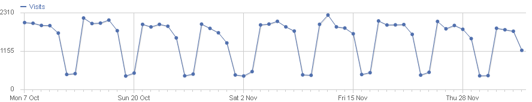
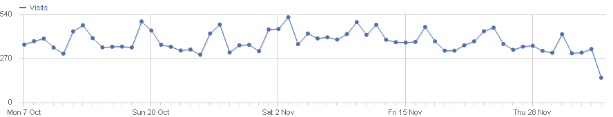

Francis Kaell: Adminstration du Cadastre et de la Topographie
Patrick Weber: ACT & Spatialbit Consulting
Administration du Cadastre et de la Topographie (ACT)
Maps & Mobile Apps | Geodata & Metadata Catalog | National Spatial Data Infrastructure | European SDI - INSPIRE | eCommerce | API & Web Services | Aggregation of Data Providers | Contributions by Users - MyMaps
Main Geoportal Interface, with a range of functionalities
Desktop Portals mostly used during working hours, mobile app on weekends & evenings  
Structured metadata catalogue & search for all geodata layers hosted by the geoportal
Allows customers to order datasets, products and services
EU Directive for a pan-european Spatial Data Infrastructure.
many advantages over web mapping solutions from Google, Bing … :
...
geo = new geoadmin.API({lang: 'fr'});
geo.createMap({
div: 'map',
easting: lonLat.lon,
northing: lonLat.lat,
zoom: 8,
bgLayer: 'webbasemap'
});
...
...
geo.addLayerToMap('arrets_bus');
geo.map.getLayersBy('layername','arrets_bus')[0].setVisibility(true);
geo.createTooltipFeature({
tooltipUrl:'http://map.geoportail.lu/bodfeature/search',
requestOnlyVisibleLayers:true
});
...
...
var kmlTroncons = new OpenLayers.Layer.Vector("Troncons de Route", {
projection: new OpenLayers.Projection("EPSG:4326"),
strategies: [new OpenLayers.Strategy.Fixed()],
protocol: new OpenLayers.Protocol.HTTP({
url: "troncons.kml?t=",
format: new OpenLayers.Format.KML({
extractStyles: true,
extractAttributes: true,
})
})
});
kmlTroncons.bodid = kmlTroncons.id;
geo.map.addLayer(kmlTroncons);
...
VisitLuxembourg | CITA | Mobiliteit | Guichet Public | Police & Sauvetage (internal) | many more public sector websites
Average 5000 visitors per day, but triples if snow/ice on roads!
There is an extensive documentation and numerous examples of the API available:
You can follow us at @geoportal_lux !